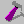

To open a game, choose File->Open and browse for the game's resource.map file. When this is opened, you'll be presented with a series of tabs for each resource type in the game.
Each tab lists all the resources of that type. Views, pics, cursors and fonts show thumbnails by default. This can be changed to a list view that shows more information about each resource. The resources can be opened for editing, deleted, or exported to a file.
Click the red running man icon , press F5, or choose Game->Run Game.
Whenever you edit and save a resource, it is added to the game without deleting the old one. This lets you keep multiple old copies of a resource around. While this may be useful, it bloats the game file. As in SCI Studio, you can rebuild resources , eliminating ones that are no longer used. You can also manually delete them.
SCI Companion visually tags these unused items with "unused", so you can know which ones are the most recent versions. In addition, whenever a new resource is added, it is highlighted in red to make it easier to find.

You give a name to a resource (select it and press F2, or choose Rename from the Edit menu). These names are not used by the game, but just for convenience in editing. They are stored in the game.ini file, and are used by SCI Studio too.